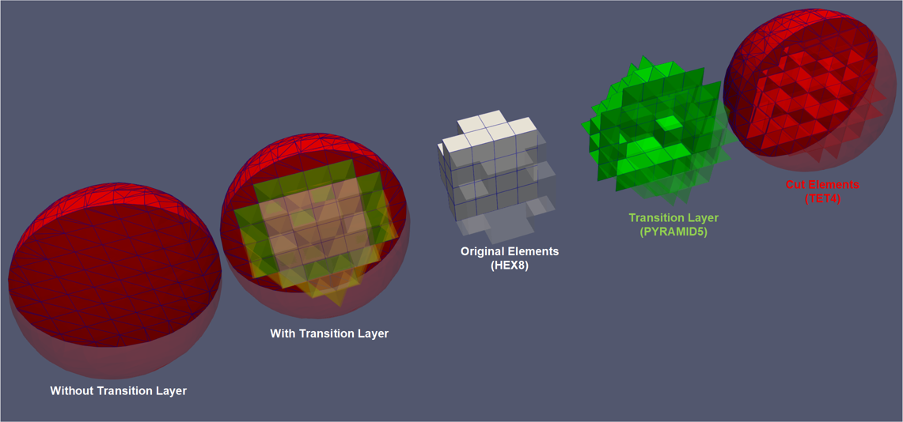

- inputThe input mesh that needs to be trimmed.
C++ Type:MeshGeneratorName
Controllable:No
Description:The input mesh that needs to be trimmed.
- level_setLevel set used to cut the mesh as a function of x, y, and z.
C++ Type:std::string
Controllable:No
Description:Level set used to cut the mesh as a function of x, y, and z.
CutMeshByLevelSetGenerator
This CutMeshByLevelSetGenerator object is designed to trim the input mesh by removing all the elements on outside the give level set with special processing on the elements crossed by the cutting surface to ensure a smooth cross-section. The output mesh only consists of TET4 elements.
Overview
The CutMeshByLevelSetGenerator is an extended version of CutMeshByPlaneGenerator. It is used to trim a 3D input mesh based on a given level set f(x,y,z)=0. The portion of the input mesh that is within the level set (i.e., f(x,y,z)<=0) is retained, while the portion of the input mesh that is outside the level set (i.e., f(x,y,z)>0) is discarded. The input mesh, given by "input", must be 3D and contain only first-order elements. The level set is specified by "level_set", which can be interpreted by FParser as a function of x, y, and z (i.e., f(x,y,z)). As each element that is across the cutting level set is cut based on the interception points, this mesh generator ensures a smooth cut instead of a "zigzag" cut along element boundaries.
Using this mesh generator, a 3D structured mesh defined by a bounding box (e.g., generated by GeneratedMeshGenerator) can be subtracted into a 3D mesh with its shape define by a given level set.
Methods

Figure 1: Example of cutting a cube mesh consisting of HEX8 elements using a spherical level set. From left to right: (1) mesh after the cutting without the transition layer; (2) mesh after the cutting with the transition layer; (3-5) detailed breakdown of the mesh cut with the transition layer.
CutMeshByLevelSetGenerator first either converts all elements of the input mesh into TET4 elements, or converts the elements crossed by the level set into TET4 elements along with a transition layer that consists of TET4 and PYRAMID5 elements. Next, the TET4 elements sliced by the level set are further split into TET4 elements.
This mesh generator uses exactly the same algorithm as its sibling mesh generator, CutMeshByPlaneGenerator. At the first-order element level, cutting by a plane and cutting by a level set are the same. See Figure 1 for an example. Refer to CutMeshByPlaneGenerator for advanced options and details.
Example Syntax
[Mesh<<<{"href": "../../syntax/Mesh/index.html"}>>>]
[lsc]
type = CutMeshByLevelSetGenerator<<<{"description": "This CutMeshByLevelSetGenerator object is designed to trim the input mesh by removing all the elements on outside the give level set with special processing on the elements crossed by the cutting surface to ensure a smooth cross-section. The output mesh only consists of TET4 elements.", "href": "CutMeshByLevelSetGenerator.html"}>>>
input<<<{"description": "The input mesh that needs to be trimmed."}>>> = block_1
level_set<<<{"description": "Level set used to cut the mesh as a function of x, y, and z."}>>> = 'x*x+y*y+z*z-0.81'
cut_face_id<<<{"description": "The boundary id of the face generated by the cut. An id will be automatically assigned if not provided."}>>> = 345
cut_face_name<<<{"description": "The boundary name of the face generated by the cut."}>>> = ls
[]
[]Input Parameters
- constant_expressionsVector of values for the constants in constant_names (can be an FParser expression)
C++ Type:std::vector<std::string>
Controllable:No
Description:Vector of values for the constants in constant_names (can be an FParser expression)
- constant_namesVector of constants used in the parsed function
C++ Type:std::vector<std::string>
Controllable:No
Description:Vector of constants used in the parsed function
- converted_pyramid_element_subdomain_name_suffixto_pyramidThe suffix to be added to the original subdomain name for the subdomains containing the elements converted to PYRAMID5. This is only applicable when transition layer is generated.
Default:to_pyramid
C++ Type:SubdomainName
Controllable:No
Description:The suffix to be added to the original subdomain name for the subdomains containing the elements converted to PYRAMID5. This is only applicable when transition layer is generated.
- converted_tet_element_subdomain_name_suffixto_tetThe suffix to be added to the original subdomain name for the subdomains containing the elements converted to TET4. This is only applicable when transition layer is generated.
Default:to_tet
C++ Type:SubdomainName
Controllable:No
Description:The suffix to be added to the original subdomain name for the subdomains containing the elements converted to TET4. This is only applicable when transition layer is generated.
- cut_face_idThe boundary id of the face generated by the cut. An id will be automatically assigned if not provided.
C++ Type:short
Controllable:No
Description:The boundary id of the face generated by the cut. An id will be automatically assigned if not provided.
- cut_face_nameThe boundary name of the face generated by the cut.
C++ Type:BoundaryName
Controllable:No
Description:The boundary name of the face generated by the cut.
- epsilon0Fuzzy comparison tolerance
Default:0
C++ Type:Real
Unit:(no unit assumed)
Controllable:No
Description:Fuzzy comparison tolerance
- generate_transition_layerFalseWhether to generate a transition layer for the cut mesh. If false, the entire input mesh will be converted to TET4 elements to facilitate the cutting; if true, only the elements near the cut face will be converted with a transition layer to maintain compatibility with the original mesh.
Default:False
C++ Type:bool
Controllable:No
Description:Whether to generate a transition layer for the cut mesh. If false, the entire input mesh will be converted to TET4 elements to facilitate the cutting; if true, only the elements near the cut face will be converted with a transition layer to maintain compatibility with the original mesh.
Optional Parameters
- disable_fpoptimizerFalseDisable the function parser algebraic optimizer
Default:False
C++ Type:bool
Controllable:No
Description:Disable the function parser algebraic optimizer
- enable_ad_cacheTrueEnable caching of function derivatives for faster startup time
Default:True
C++ Type:bool
Controllable:No
Description:Enable caching of function derivatives for faster startup time
- enable_auto_optimizeTrueEnable automatic immediate optimization of derivatives
Default:True
C++ Type:bool
Controllable:No
Description:Enable automatic immediate optimization of derivatives
- enable_jitTrueEnable just-in-time compilation of function expressions for faster evaluation
Default:True
C++ Type:bool
Controllable:No
Description:Enable just-in-time compilation of function expressions for faster evaluation
- evalerror_behaviornanWhat to do if evaluation error occurs. Options are to pass a nan, pass a nan with a warning, throw a error, or throw an exception
Default:nan
C++ Type:MooseEnum
Controllable:No
Description:What to do if evaluation error occurs. Options are to pass a nan, pass a nan with a warning, throw a error, or throw an exception
Parsed Expression Advanced Parameters
- enableTrueSet the enabled status of the MooseObject.
Default:True
C++ Type:bool
Controllable:No
Description:Set the enabled status of the MooseObject.
- save_with_nameKeep the mesh from this mesh generator in memory with the name specified
C++ Type:std::string
Controllable:No
Description:Keep the mesh from this mesh generator in memory with the name specified
Advanced Parameters
- nemesisFalseWhether or not to output the mesh file in the nemesisformat (only if output = true)
Default:False
C++ Type:bool
Controllable:No
Description:Whether or not to output the mesh file in the nemesisformat (only if output = true)
- outputFalseWhether or not to output the mesh file after generating the mesh
Default:False
C++ Type:bool
Controllable:No
Description:Whether or not to output the mesh file after generating the mesh
- show_infoFalseWhether or not to show mesh info after generating the mesh (bounding box, element types, sidesets, nodesets, subdomains, etc)
Default:False
C++ Type:bool
Controllable:No
Description:Whether or not to show mesh info after generating the mesh (bounding box, element types, sidesets, nodesets, subdomains, etc)